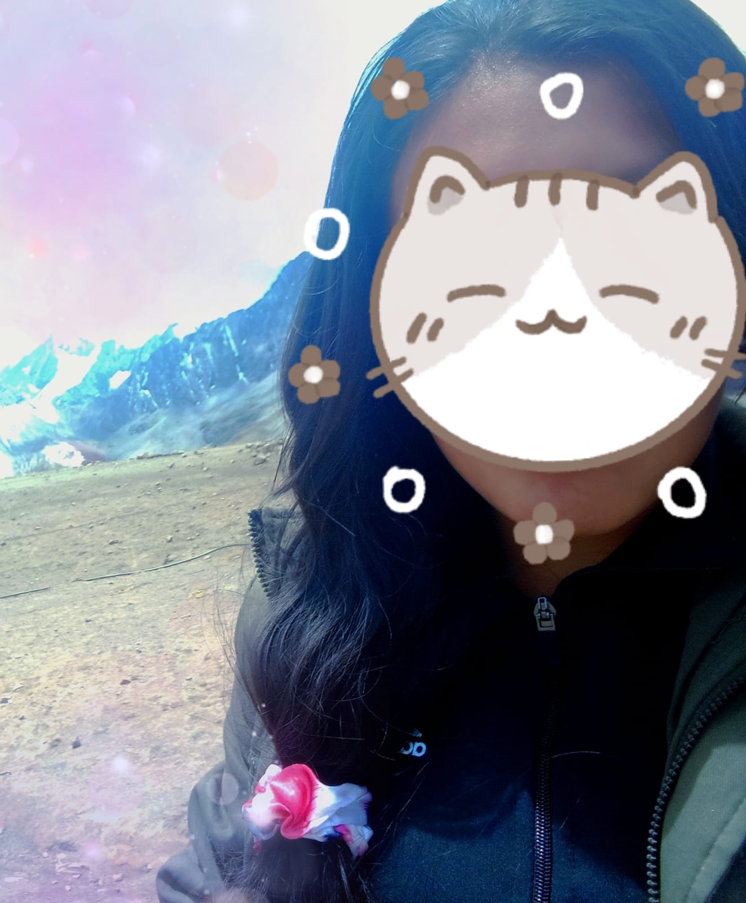
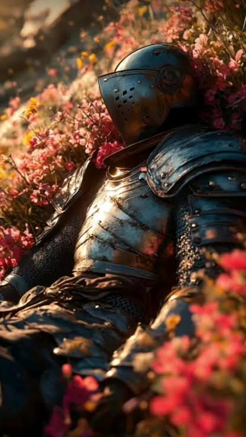
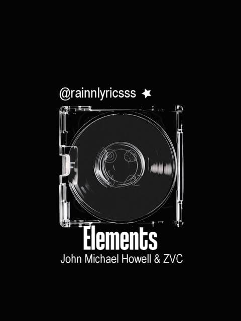
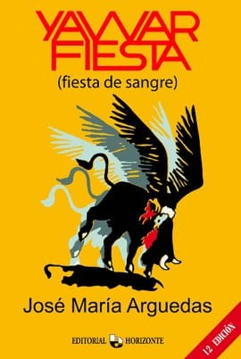

MI BLOG PERSONAL

Briscela Shirley Choquehuanca Ccama
Perú, Arequipa, Caylloma, Coporaque
Presentación
¡Hola! bienvenido a mi rincón en la web, te invito a descubrir un pedacito de mi universo. Aquí comparto lo que soy através del arte, el deporte, la música, la lectura.Creo que firmemente que con esfuerzo y dedicación podemos materalizar cada meta que nos proponemos.
Mis Pasatiempos
Pintar
Me encanta pintar es muy inspirador y tranquilo darle color a varios de mis dibujos creando colores que no conocia.
Dibujar
Me facina dibujara ya que puede crar personajes que solo en mi mente puedo visualizar.
Leer
Leer para mi tiene muchos significados para adquirir conocimiento saber de nuestra historia, transportarse a mundos ficcticios y muchas más.
Mis Deportes Favoritos
Natación
Me encanta la natación aunque no lo practique mucho.
Mis Gustos Musicales

Story of a warrior
Artista: John Michael Howell
Resalta un mensaje de resilencia, esperanza y el valor de seguir adelante.
Escuchar en YouTube
Elements
Artista: John Michael Howell
Utiliza los elementos como una metáfora para describir el amor absoluto, que se mantiene vivo en cada rincón de la naturaleza.
Escuchar en YouTubeAutores de Libros y Artistas de Pintura
José María Arguedas

Obra representativa: Yawar Fiesta
Representa la resistencia cultural y el orgullo andino. Es la lucha de un pueblo que defiende su identidad y tradiciones hasta con la sangre frente a la opresión.
Frase Favorita
"La emoción más antigua y más intensa de la humanidad es el miedo, y el más antiguo y más intenso de los miedos es el miedo a lo desconocido."
— Lord of the Mysteries (Yuan Ye)
Mis Sueños y Metas
Estoy enfocada en terminar mis estudios técnicos en ACC para luego dar el salto a la formación universitaria. Considero que la educación continua es la base del éxito. A mediano y largo plazo, mi mayor incentivo personal es alcanzar la estabilidad necesaria para viajar con mi familia, recorriendo primero las maravillas del Perú y abriéndonos las puertas hacia el mundo.